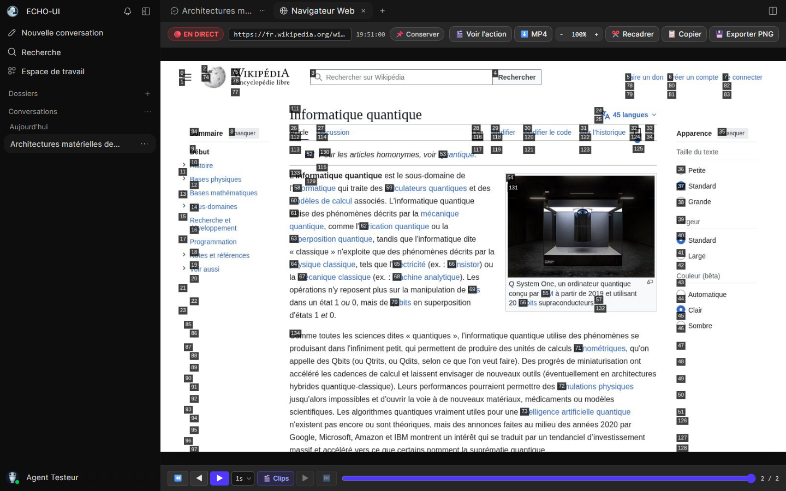
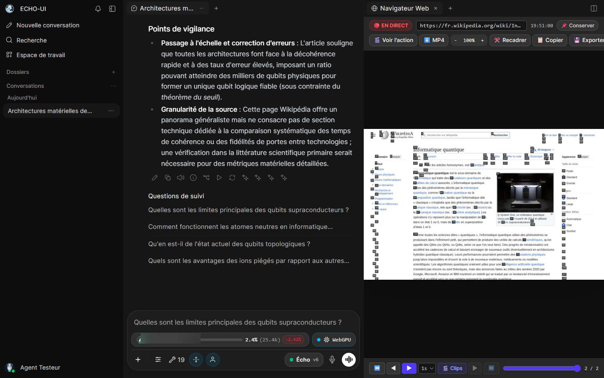

11. Recherche & Navigation
Observer le monde réel sans exposer vos requêtes
ECHO combine un méta-moteur de recherche privé, un chercheur autonome multi-sources, un véritable navigateur Web observable en direct, des sondes capables d'examiner de longs documents ou médias, et un moteur cartographique. Chaque niveau s'adapte à la complexité de la question afin d'éviter la saturation de la conversation.
1. Escalade progressive de la recherche Web
Selon le degré de précision attendu, l'assistant privilégie l'outil le plus léger et le plus direct avant de mobiliser un navigateur complet :
| Niveau d'investigation | Usage typique | Ce que reçoit l'utilisateur |
|---|---|---|
| 1. Réponse instantanée | Définition, date établie ou fait encyclopédique statique. | Réponse immédiate sans multiplication de requêtes (hors actualité). |
| 2. Méta-recherche Web | Actualités, documentation technique, publications scientifiques, code, images ou météo sur 12 catégories. | Jusqu'à 8 extraits sourcés et datés, filtrables par fraîcheur temporelle et langue. |
| 3. Recherche approfondie | État de l'art complet ou vérification croisée sur plusieurs sites et publications. | Un agent dédié enchaîne recherches et lectures de pages puis restitue un rapport synthétique sourcé. |
| 4. Navigation interactive | Sites dynamiques, formulaires, pagination, tableaux interactifs ou pages protégées. | Un navigateur autonome pilote la page avec vision de l'écran et restitue le résultat observé. |
2. Le navigateur Web autonome et le suivi en direct
Lorsqu'une URL connue doit simplement être lue, l'assistant privilégie une lecture ciblée ou un archivage dans la mémoire de session. En revanche, dès qu'une interaction réelle avec la page est nécessaire, l'onglet Navigateur Web s'ouvre en arrière-plan dans le panneau latéral droit pour vous permettre d'observer chaque action.

Onglet Navigateur Web : page Wikipédia consultée et annotée en direct (repères visuels Set-of-Marks), barre DVR et sélecteur de séquences vidéo Clips (2 / 2).

Mode d'affichage partagé (Split screen) : synthèse structurée rédigée par ECHO à gauche et navigateur web autonome observable en parallèle à droite.
Flux en direct et curseur d'action
En mode En direct, vous visualisez les pages traversées et le pointeur rouge matérialisant chaque clic ou survol effectué par l'agent de navigation.
Relecture temporelle & Clips vidéo
La barre de navigation temporelle permet de revenir en arrière image par image, de basculer entre la capture haute définition et le clip vidéo d'action (Voir l'action), ou de télécharger la séquence au format MP4.
Épinglage et nettoyage automatique
Les captures temporaires sont purgées après fermeture ou expiration de la session navigateur. Le bouton Conserver protège une capture et son clip vidéo contre ce nettoyage et les inclut lors d'une duplication de conversation.
Outils visuels intégrés à l'onglet
Depuis l'onglet Navigateur Web, vous pouvez zoomer, recadrer une zone précise par poignées, copier l'image dans le presse-papiers ou l'exporter au format PNG sans quitter la conversation.
3. Exploration de fichiers locaux et médias volumineux
Pour analyser vos fichiers déposés (PDF de plusieurs centaines de pages, enregistrements audio, vidéos longues, images haute résolution ou fichiers bruts), ECHO évite d'injecter aveuglément des mégaoctets de contenu dans le fil de discussion :
- Sonde ciblée : extrait uniquement la réponse à une question précise sur un document ou média lourd, en découpant automatiquement les très gros fichiers en segments analysés en parallèle.
- Rapport multimédia horodaté : produit une description chronologique détaillée d'une vidéo, d'un audio ou d'un document visuel.
- Affichage d'image & Inspection technique : affiche directement une image locale ou distante dans la réponse, lit des plages de lignes exactes sur un fichier texte ou calcule ses empreintes cryptographiques (SHA-256, MD5, etc.).
4. Géolocalisation et cartes interactives
Pour les recherches géographiques (lieux, adresses, horaires d'ouverture, itinéraires ou points d'intérêt), un outil dédié interroge les données cartographiques en tenant compte de votre localisation contextuelle si elle est activée, et peut afficher une carte interactive directement dans la réponse.
Dossier d'Ingénierie : SearXNG, Playwright Zéro-Trace DOM, WebSocket Binaire & Pipeline Multimédia
1. Méta-Recherche Souveraine (sovereign_web_search.py v6.23.0.1 & searxng-settings.yml v6.18.2.1)
- Pool SearXNG : 79 moteurs déclarés répartis sur 12 catégories (
general,it,science,images,videos,social media,news,music,map,files,movies,weather) avec sortie JSON enrichie (answers/WeatherAnswer,infoboxes,publishedDate, corroborationengines), couplés aux réponses instantanées DuckDuckGo viasearch_instant_answer. - Régulation & Recherche Profonde :
search_weblimite les appels simultanés (2 max par tour recommandé).delegate_deep_researchs'appuie surEchoSubagentController.run_or_resume(ECHO_AUTONOMOUS_MAX_TURNS = 15tours d'outils,ECHO_AUTONOMOUS_TIMEOUT_SEC = 300s, défautMODEL_PROMETHEUS) avec fermeture explicite de session navigateur en fin de mission.
2. Navigateur Autonome Playwright (navigation_engine_tool.py v6.23.0.1, echo_browser_lib.py v6.23.0.1 & 22-docker-browser-worker)
- Concurrence & Sessions : Sémaphore global limité à
ECHO_MAX_CONCURRENT_BROWSERS = 2instances simultanées ; éviction LRU à 20 contextes dansbrowser_api.py(v6.16.0.1). Séparation stricte entrechat_id(persistance SQLite/browserviews/et drop-zone Download Broker25-docker-download-broker) etbrowser_session_id(sub_sidouchat_idpour l'isolation Playwright). - Zéro-Trace DOM & Furtivité WAF : Calcul JS en mémoire de sélecteurs CSS déterministes (
GET_CSS_PATH_JS) sans tatouage d'attributs DOM ; support WebGL SwiftShader, argument natif--disable-blink-features=AutomationControlled, alignement dynamique User-Agent / Client Hints (Sec-CH-UA*) et getters WebIDL surNavigator.prototype/Window.prototype. - Ciblage Hybride Lidar / Sniper : Recalibrage de bounding box post-scroll (
wait_for_settle/ Lidar Check), grille d'inspection fine (DEFAULT_VISION_GRID_STEP = 48) et actionaction_zoom_inviaPage.captureScreenshot(clip=...)avec réticule rouge. - Streaming WebSocket Binaire & Clips MP4 : CDP
Page.startScreencastbridé à 9 FPS surWS /ws/screencast/{session_id}(relayé viarouters/cognition.pyWS /{chat_id}/browser-ws), trames JPEG préfixées d'un en-tête Big-Endian 16 octets (struct.Struct("!BBHHHHIH")), régulation par backpressureack(LIVE_MAX_IN_FLIGHT_FRAMES = 2). À l'arrêt d'action (POST /screencast/stop), assemblage MP4 H.264 (libx264 -preset ultrafast -crf 28 -pix_fmt yuv420p -movflags +faststart) avec incrustation du curseur rouge. - Cycle de vie
browserviews/& Outils : Captures et clips stockés dansbrowserviews/(resource_type="browserview", statuts"transient"/"retained"). Budget N1 (cleanup_expired_browserviews_sync, grâceBROWSER_TRANSIENT_GRACE_SEC = 1800.0s) et budget N2 (enforce_transient_clip_budget: plafond FIFO deBROWSER_MAX_TRANSIENT_CLIPS_PER_CHAT = 50clips /BROWSER_MAX_TRANSIENT_CLIPS_MB = 60 Mo). Outils exposés :delegate_web_browsing(tranches8 tours / 120sviaBrowserToolDispatcher),analyze_web_page(MODEL_APOLLO),archive_web_page(session éphémère isolée + indexation RAG),web_browse_reset,get_browser_frames_history(lecture seule non destructive),retain_browser_frameetopen_browser_ui.
3. Exploration Multimédia & Maps (file_content_explorer.py v6.14.2.1 & gemini_maps_grounding.py v5.233.0.1)
- Pipeline Multimédia
semantic_probe&read_multimedia_file: Traitement délégué àMODEL_APOLLO(thinking="medium"). Vidéos décimées par FFmpeg à1 fpsen résolution paireyuv420p(-c:v libx264 -preset veryfast -qp 26 -g 10 -bf 0 -c:a copy) et fragmentées en fMP4 toutes les 5 s (-frag_duration 5000000). - Segmentation Map-Reduce RAM & Régulation : Au-delà de 30 Mo (
MAX_MULTIMODAL_SIZE_KB) ou 45 min par million de tokens (2700sà1 048 576tokens), découpage sans recouvrement 100 % en mémoire vive (streaming PDFO(1)via_iter_pdf_memory_segments, troncature fMP4 sur frontièremoof+mdat), régulé par sémaphores par boucle (MAX_CONCURRENT_TRANSCODES = 1,ECHO_MAX_CONCURRENT_MULTIMODAL_SEGMENTS = 3) et priorité OS basse (os.nice(19)). - Outils complémentaires :
read_raw_file_content(text,base64max 12 288 o,hexmax 8 192 o),show_image_to_user(externalisationecho-asset://danstools_output/embeds/viaEchoUI.image_viewer),get_file_metadata,calculate_file_hashesetsearch_maps(MODEL_ZEPHYR,thinking="minimal", outil natifgoogleMaps).